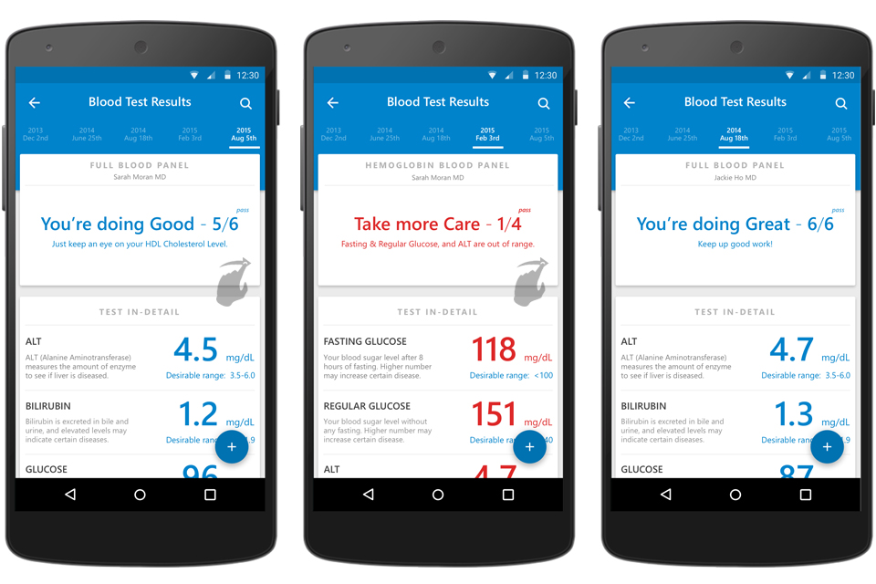
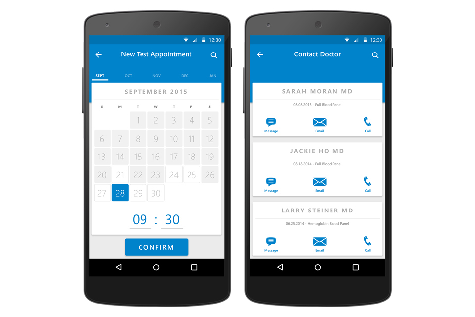

Blooday
Overview
This is a freelancing design for a medical agency.
I worked as the sole Product Designer on this project. I collaborated with PM, UX Researchers and engineers on the whole design and development process. All wireframes, mockups and visual assets were designed and created by me. The final delivery was based on 5-inch Android phone with Android 5.0+ system.
Context
Technology and mobile are transforming the way we manage our health. Medical test is no longer a daunting, long and hard-to-understand process. Blooday envisions a friendly, instant and approachable experience to receive your blood test result. After you took a blood test as part of a routine check-up, your doctor uses this mobile app to visualize the results and delivers them to you instantly. The design of Blooday addresses two main problems:
1. What functions this app should provide to make blood testing process seamless?
2. What types of information of testing result should be shown and how to organize them?
Design Goal
Overall the design is to clearly and effectively deliver test results, and help user to take further actions. The specific design goals are formulated through two steps. The first is to understand different users' engaging behaviors, and to organize the level of information serving different engagements. The second is to have functions for user to address potential health concerns and medical appointments.
Top-down.
Quick conclusion and in-detail explanation.
Quick conclusion and in-detail explanation.
The test result panel is designed to show the information in three levels. The first level is summary and conclusion for very quick reading. The second is to break down the test result into specific items, and to identify the out-of-range item with visual design, which enables user to quickly locate the problem. The third level is to really dive into the out-of-range metric and offer explanation and suggestions for improvement.
30 seconds to 30 minutes.
All levels of information.
All levels of information.
All the information delivered by Blooday is organized based on the engaging time, information types, and data formats. Different metrics lead to adjustments of proportion and typeface.
Swipe to switch.
Show historical records.
Show historical records.
The user interaction on main result page is designed to enable a fast switch among historical results and the latest one. User can directly tap the date on top or swipe left and right to choose the certain test result.

User Interaction Flow
Blooday goes beyond a simple information messenger. It not only delivers the test results to user, but also enable user to take further actions after reviewing the result, such as comparing historical results, making new medical appointment, and contacting doctor directly. Blooday completes the user experience in the whole testing process.
Floating portal.
Take actions directly.
Take actions directly.
A floating button is designed as the trigger for actions. The three main functions - Tracking History, Making Appointment and Contacting Doctor - can be directly accessed and used when user views her/his test result.
History tracking.
Progress in detail.
Progress in detail.
History & Progress page offers a full tracking of user's test history, and visualizes certain item based on timeline. User can view how she/he is doing in terms of a specific testing metric.
Move forward.
Contact doctor and make new appointment.
Contact doctor and make new appointment.
When there is a new test being ordered by doctor, user can easily make the appointment. When there is a need to communicate directly, user can quickly contact her/his doctor for a test result of a certain time.

Under control.
Your account and info is secured.
Your account and info is secured.
A control and setting side-panel is toggled through tap and swipe, which provides account overview and helps user to keep their medical records private after logging out.
Behind the scene.
Following the user-centered deducing process, the design is unfolded through a series of key findings, problem framing, user storyboarding , design ideation and iterations.